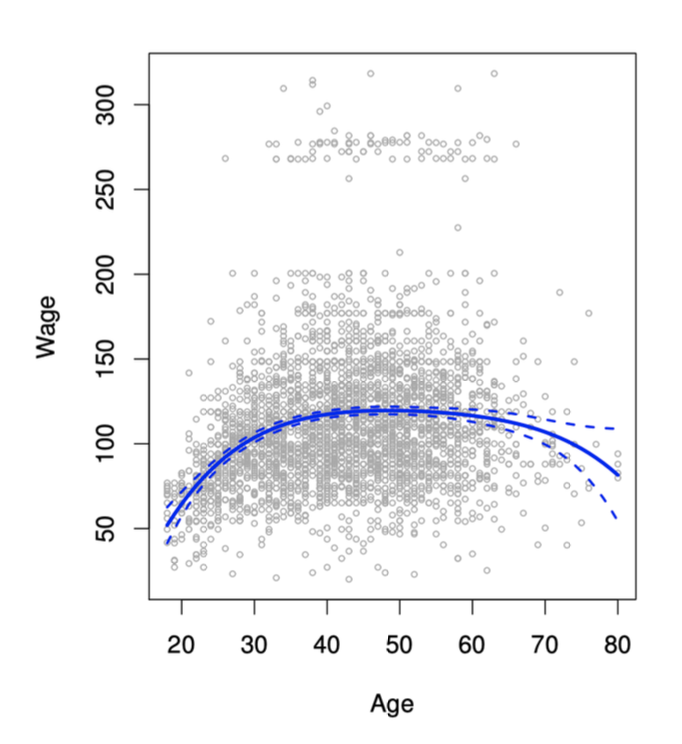
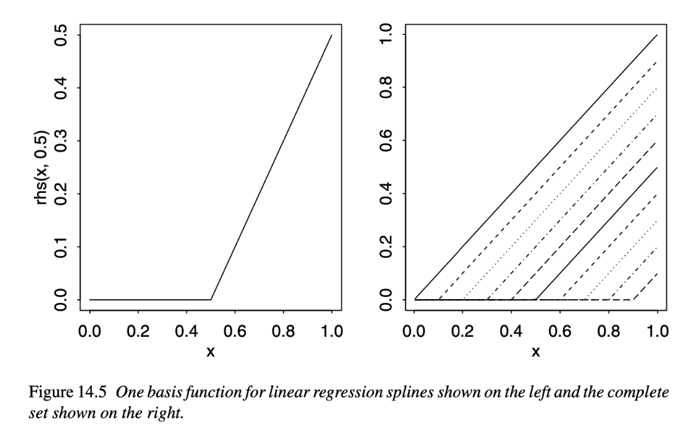
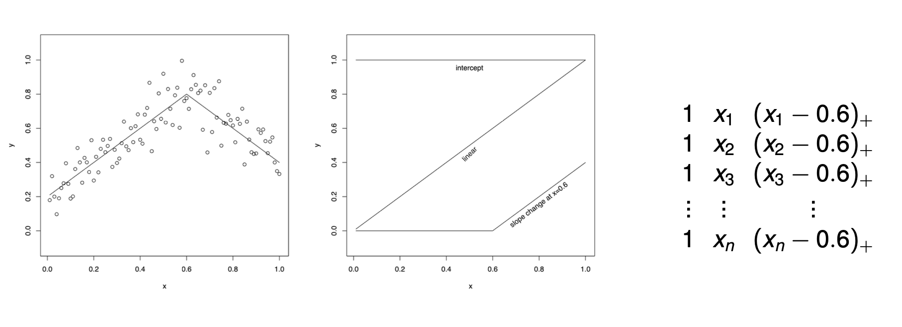
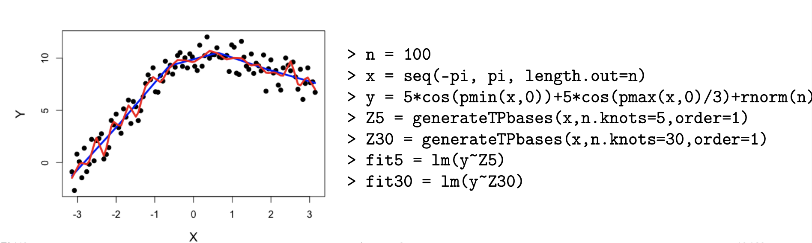
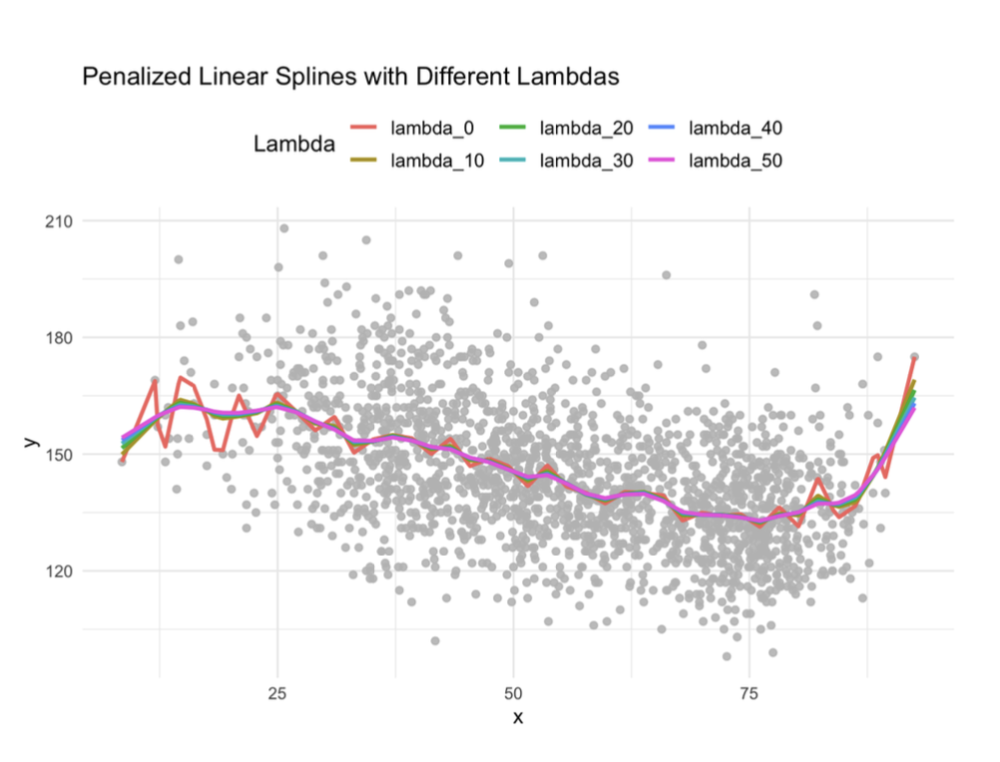
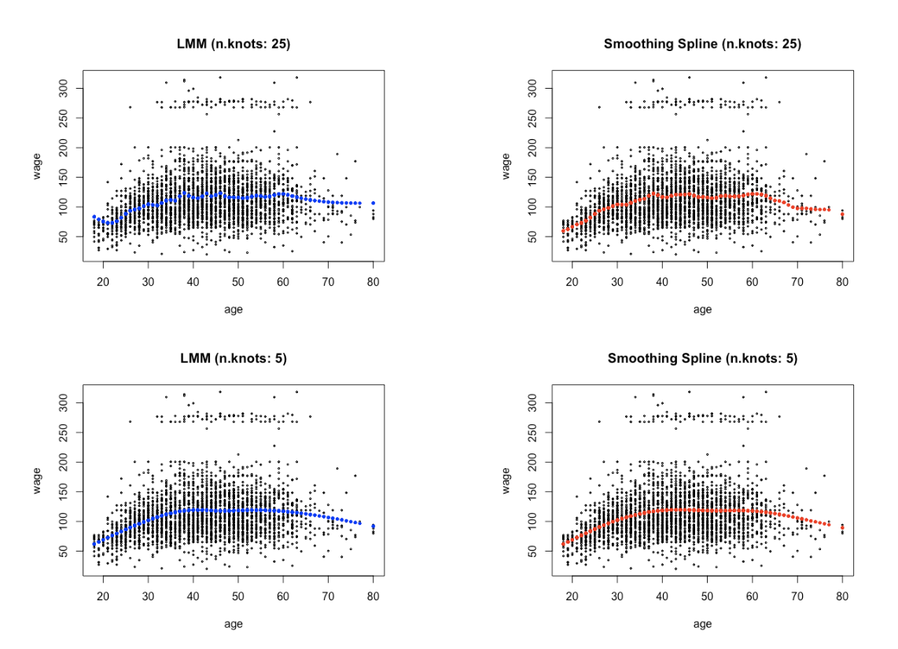
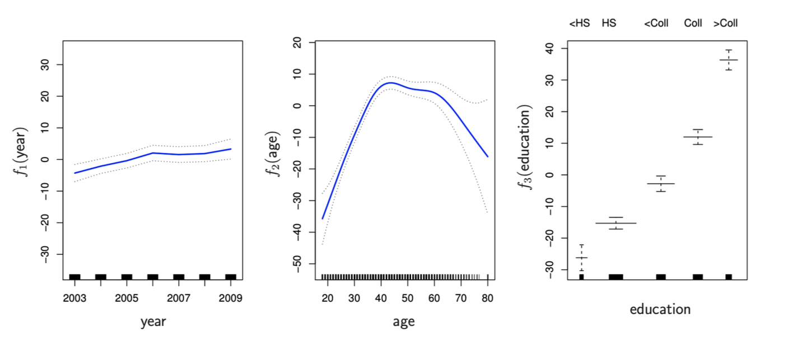

Week 12
A hospital is interested in predicting patients’ systolic blood pressure using demographic information, lifestyle factors, and medical measurements.
The dataset contains 200 patients and 100 predictors. Some predictors are highly correlated (e.g., BMI, weight, and waist circumference).
The researchers are considering four approaches:
Questions:
The researchers decide to fit LASSO regression and use 10-fold cross-validation to choose \(\lambda\).
They obtain the following results:
| \(\lambda\) | CV MSE |
|---|---|
| 0.001 | 120 |
| 0.01 | 105 |
| 0.1 | 92 |
| 1 | 98 |
| 10 | 145 |
Questions:
After selecting their tuning parameters, the researchers obtain the following results on an independent test set:
| Model | Test MSE | Nonzero coefficients |
|---|---|---|
| OLS | 130 | 100 |
| Ridge | 91 | 100 |
| LASSO | 95 | 12 |
| Elastic net | 89 | 35 |
Questions:
Almost everything in this course covers ‘linear’ associations between two random variables. If we had \(x\) and \(y\), then we modeled their linear relationship by
\[y_i = \beta_0 + x_i\beta_1 + \epsilon_i\]
The simplest method to account for the potential linearity is to add higher-order terms of \(x\). For example,
\[y_i=f(x_i)+\epsilon_i=\beta_0+x_i\beta_1+x_i^2\beta_2+x_i^3\beta_3+\epsilon_i\]
We may add more higher-order terms to the model, but it does not mean that it is always beneficial.

Smooth polynomial lines
Let the slope change many times
\[y_i = \beta_0+x_i\beta_1+\sum_{j=1}^K (x_i-\kappa_j)_+\gamma_j+\epsilon_i\]
where \((x_i-\kappa_j)_+=x_i-\kappa_j\) if it is greater than 0 and 0 otherwise.
\(\kappa_1,\ldots,\kappa_K\) are called ‘knots’.


Simulated example: Let \(y_i=f(x_i)+\epsilon_i\) where \(\epsilon_i\sim N(0,1)\) and
\[f(x_i)=5\cos(x_i)\quad\text{if }x_i<0\qquad\text{and}\qquad f(x_i)=5\cos(x_i/3)\quad\text{if }x_i>0\]

In case of the truncated linear basis, we minimize
\[\sum_{i=1}^{n}\left(y_i-\beta_0-x_i\beta_1-\sum_{j=1}^{K}(x_i-\kappa_j)_+\gamma_j\right)^2+\lambda\sum_{j=1}^{K}\gamma_j^2\]
It relaxes the knot-selection issue, leaving a single \(\lambda\) to be chosen.
\[ \mathbf y=\begin{bmatrix}y_1\\y_2\\\vdots\\y_n\end{bmatrix},\quad \mathbf X=\begin{bmatrix} 1 & x_1 & (x_1-\kappa_1)_+ & \cdots & (x_1-\kappa_K)_+\\ 1 & x_2 & (x_2-\kappa_1)_+ & \cdots & (x_2-\kappa_K)_+\\ \vdots & \vdots & \vdots & & \vdots\\ 1 & x_n & (x_n-\kappa_1)_+ & \cdots & (x_n-\kappa_K)_+ \end{bmatrix},\quad \mathbf D=\begin{bmatrix}0&0&\mathbf 0^T\\0&0&\mathbf 0^T\\\mathbf 0&\mathbf 0&\mathbf I_K\end{bmatrix} \]
When \(\lambda\) is provided, the closed form solution for \(\boldsymbol\beta\) is
\[\hat{\boldsymbol\beta}=(\mathbf X^T\mathbf X+\lambda\mathbf D)^{-1}\mathbf X^T\mathbf y\]
Example with different choices of \(\lambda\)s

Choosing \(\lambda\)
The gam() function in the mgcv package uses generalized cross-validation (GCV), which is possible because \(\hat{\mathbf y}=f(\mathbf X)=\mathbf S_\lambda\mathbf y\).
Define \(\mathbf S_\lambda=\mathbf X(\mathbf X^T\mathbf X+\lambda\mathbf D)^{-1}\mathbf X^T\).
For each \(\lambda\), compute
\[\operatorname{GCV}(\lambda)=\frac{\sum_{i=1}^{n}[y_i-\hat f_\lambda(x_i)]^2}{[1-\operatorname{trace}(\mathbf S_\lambda)]^2}\]
Choose \(\lambda\) that yields the lowest \(\operatorname{GCV}(\lambda)\).
Choosing \(\lambda\): Linear mixed effect formulation
\[ \mathbf X=\begin{bmatrix}1&x_1\\1&x_2\\\vdots&\vdots\\1&x_n\end{bmatrix} \quad\text{and}\quad \mathbf Z=\begin{bmatrix} (x_1-\kappa_1)_+&\cdots&(x_1-\kappa_K)_+\\ (x_2-\kappa_1)_+&\cdots&(x_2-\kappa_K)_+\\ \vdots&&\vdots\\ (x_n-\kappa_1)_+&\cdots&(x_n-\kappa_K)_+ \end{bmatrix} \]
REML=T in the gam() function.
Multiple linear regression:
\[y_i=\beta_0+x_{i1}\beta_1+x_{i2}\beta_2+\cdots+x_{ip}\beta_p+\epsilon_i\]
Generalized additive models:
\[y_i=\beta_0+f_1(x_{i1})+f_2(x_{i2})+\cdots+f_p(x_{ip})+\epsilon_i\]

\[\text{wage}=\beta_0+f_1(\text{year})+f_2(\text{age})+\text{education}+\epsilon\]
Polynomial regression allows nonlinear relationships by introducing higher-order terms, but high-degree polynomials can lead to overfitting.
Splines model nonlinear relationships using piecewise polynomials joined at knots.
Penalized splines control this flexibility by penalizing large changes in the fitted function.
Generalized additive models (GAMs) extend multiple linear regression by allowing each predictor to have its own smooth function:
\[y_i=\beta_0+\sum_{j=1}^p f_j(x_{ij})+\epsilon_i\]
Advantages of GAMs: Flexible nonlinear relationships, improved predictive potential, and interpretable individual predictor effects.
Limitations of GAMs: Additive models do not automatically capture interactions; including many nonlinear interactions can greatly increase model complexity.
Announcements: Assignment due Dec 4th
Next Week: Course Review!!